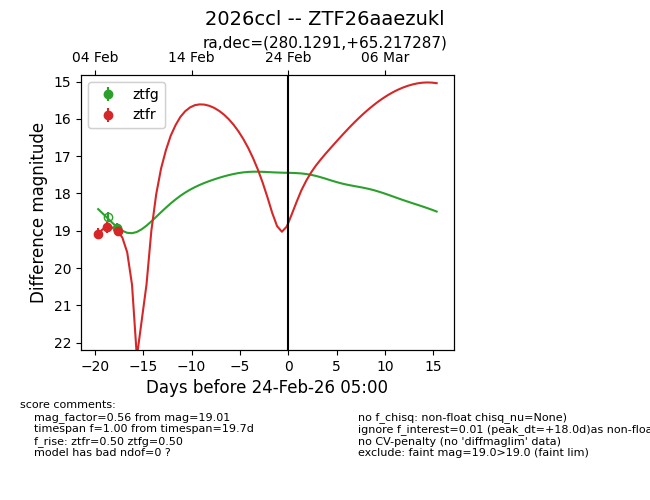
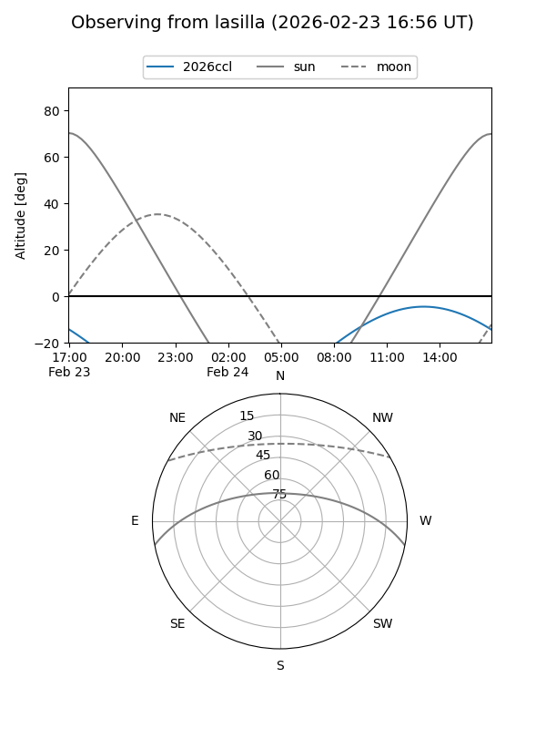
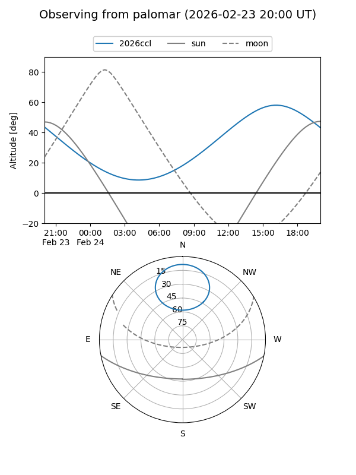

2026ccl
Target 2026ccl at 2026-02-24 09:08
Aliases and brokers:
FINK: link
Lasair: link
ALeRCE: link
TNS: link
YSE: link
alt names
ZTF26aaezukl (ztf,fink_ztf)
2026ccl (tns,yse)
Coordinates:
equatorial (ra, dec) = 280.1291,+65.21729
equatorial (HMS+DMS) = 18:40:30.98,+65:13:02.23
galactic (l, b) = (95.2735,+25.57936)
Flags:
Photometry:
last ztfg=18.93, ztfr=19.01
1 ztfg, 3 ztfr detections
Lightcurve

Visibility


Additional plots